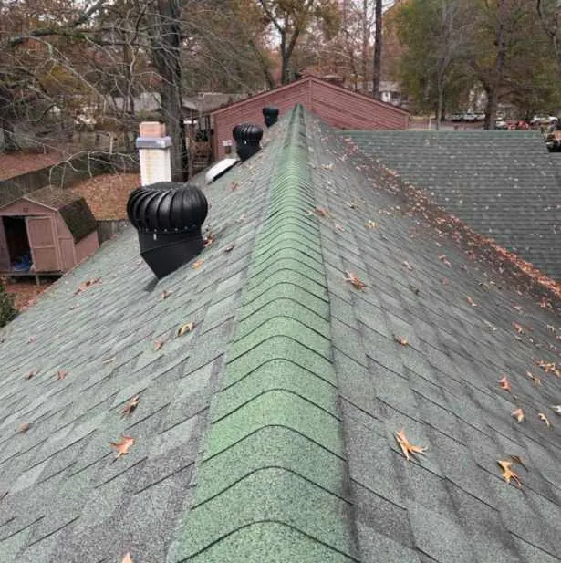
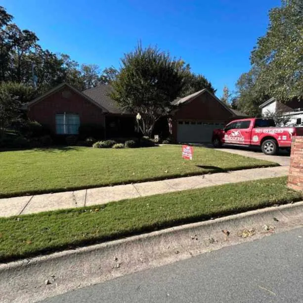

When I needed a roofing contractor in Cabot, AR, after noticing missing shingles and minor leaks, I wasn’t sure what to ask. EZ Roofing helped me understand my roof’s condition through a free roof inspection, addressed the loose shingles, and explained the repair process clearly. Asking the right questions helped me make an informed choice for residential roofing.
How Can I Identify Potential Roof Problems Before Hiring a Contractor?
Winter storms in Cabot can leave roofs with hidden damage that isn’t obvious from the ground. Ice, wind, and freezing rain in February often cause shingles to lift or crack, allowing water to seep into the attic or walls. I noticed water spots on my ceiling after a recent storm and realized that waiting could make small leaks worse. Many homeowners face similar issues with residential roofing, especially in older neighborhoods where roofs have been exposed to multiple seasonal storms.
Before hiring a roofing contractor, it helps to know what signs to look for. These include:
- Missing, cracked, or curled shingles
- Dark streaks or stains on the roof
- Water stains inside the home or attic
- Loose or damaged flashing around chimneys or vents
- Sagging gutters or soffit damage
Recognizing these issues helps guide your conversation with a roofing contractor and ensures the inspection addresses the areas most at risk.
What Should I Ask About a Roofing Contractor’s Experience?
When hiring a roofing contractor in Cabot, AR, it’s important to understand their local expertise. I asked EZ Roofing about their experience with residential roofing in the area, and they explained the challenges they encounter during February storms, including ice formation, wind damage, and fluctuating temperatures that affect shingles.
Questions to consider asking include:
- How long have you been working in Cabot or the surrounding areas?
- Do you specialize in residential roofing, or do you also handle commercial projects?
- Can you provide references from local homeowners?
- Have you handled roof repairs after similar winter storms?
Answers to these questions help homeowners evaluate whether the contractor is familiar with local weather patterns and seasonal roofing issues.
How Do Roofing Contractors Conduct Inspections?
A thorough inspection is critical before committing to repairs or replacement. EZ Roofing offered a free roof inspection, which included not only the shingles but also soffit, fascia, gutters, siding, and windows. This comprehensive approach helps identify secondary concerns like minor water intrusion or gutter misalignment that could worsen roof damage.
During the inspection, contractors typically:
- Examine the roof from the ground and safely on the roof
- Check for missing or damaged shingles, leaks, or weak spots
- Inspect flashing and vents
- Evaluate gutters, downspouts, and surrounding exterior features
In my case, the inspection revealed a few loose shingles along the north side of the roof and minor water intrusion in the attic. Having this information allowed me to address problems before they became larger issues.
What Questions Should I Ask About Materials and Techniques?

Understanding what materials and techniques a contractor uses helps ensure repairs are suitable for your home and local climate. For example, certain shingles perform better in cold, wet winters common in Arkansas. I asked our roofing contractors which shingles would resist ice damage and wind, and they explained the differences in asphalt shingles and underlayment options without pushing a specific brand.
Other helpful questions include:
- What types of shingles or roofing materials do you recommend for Cabot homes?
- How long will the repairs last under local weather conditions?
- What techniques do you use for leak prevention?
These questions help homeowners make informed choices and avoid unnecessary costs while maintaining roof durability.
How Do Roofing Contractors Handle Storm Damage?
After severe winter storms, roof damage can be urgent. I asked about response times and whether they could assess storm damage quickly. Immediate response helps prevent further damage and allows affected areas to dry safely, reducing the risk of mold or structural issues.
Ask contractors:
- How soon can you perform an inspection after a storm?
- Do you document damage for insurance purposes?
- Can you secure loose shingles or tarps if immediate repair isn’t possible?
Contractors who can respond promptly and provide detailed documentation are often more prepared for winter storm conditions in Cabot.
Estimated Costs and Job Timeframe
Local roofing contractors in Cabot, AR, charge varying rates depending on the scope of repairs. For minor shingle replacement and leak repairs, typical costs range from $250 to $650. Full residential roof replacements can range from $5,000 to $10,000, depending on roof size, materials, and slope.
For my repair, the team completed the job in one day, including securing loose shingles and cleaning up debris. Seasonal factors like icy patches or wet conditions can sometimes extend repair time, so scheduling a free roof inspection in February helps identify urgent repairs early and allows contractors to plan around weather constraints.
Frequently Asked Questions

Can I Inspect My Roof Myself in Cabot, AR?
A visual check from the ground can identify obvious damage, but professional inspections are recommended. Contractors have safety equipment and experience to evaluate shingles, flashing, gutters, and attic conditions accurately.
How Often Should I Schedule a Roof Inspection?
Annual inspections, particularly after winter storms, help track roof condition over time.
Are Minor Repairs Worth Doing Early?
Yes, addressing small issues like loose shingles or minor leaks prevents them from worsening. Prompt attention can reduce the risk of water damage or structural problems.
Do Roofing Contractors in Cabot Handle Gutter or Siding Checks?
Some do. EZ Roofing, for example, includes gutters, soffit, fascia, and siding evaluations during roof inspections to provide a broader property assessment.
How Does EZ Roofing Handle Residential Roofing in Cabot, AR?
EZ Roofing provides practical local expertise for homeowners facing winter storm damage or routine wear and tear. Their free roof inspections include a thorough evaluation of shingles, flashing, gutters, and other exterior features. For homeowners, this process helps track roof condition and plan repairs efficiently.
Secondary services like gutter and siding inspections add value to the property evaluation without extra cost. Experience with seasonal challenges in Cabot allows the team to recommend appropriate materials and techniques, ensuring repairs are suited for local conditions.
Taking the Next Step
If you notice missing shingles, leaks, or other signs of roof wear in Cabot, AR, scheduling an inspection can prevent more extensive problems later. EZ Roofing offers free roof inspections for homeowners, which include a detailed review of shingles, gutters, siding, soffit, and fascia. Scheduling your free roof inspection allows a local contractor to assess your residential roofing, recommend repairs, and provide clear documentation for future reference.
Immediate attention to minor issues can help prevent structural problems and water damage while keeping your home in good condition throughout winter and beyond.